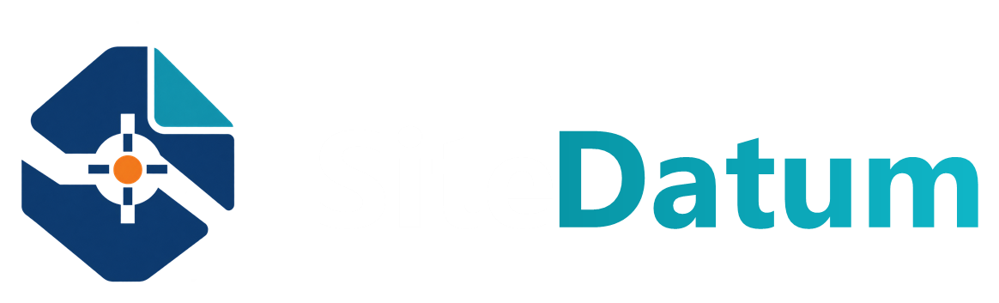

Free
$0
Up to 3 active projects · complete manual registers · backup and essential export.
Download free
Download 1.4.1Local-first Windows workspace
A command center for project engineers who need every task, RFI, submittal, and ordinary Windows file to stay connected—without surrendering ownership of the work.
Actual SiteDatum 1.4.0 application screen · illustrative project records · no account required for Free
01 / Pressure
One attention queue brings overdue, due-soon, blocked, and waiting work into view—with the reason and project context intact.
The signal arrives first. The underlying record stays one action away.
02 / Context
Tasks, RFIs, submittals, files, notes, contacts, and controls stay attached to the real project instead of scattering across tabs and inboxes.
Select a record type to transform the project view while the surrounding project context remains fixed.
03 / Ownership
SiteDatum stays useful when the network does not. Project documents remain normal Windows files and your daily work never depends on a cloud account.
The controlled workday
A three-beat story built around the way project engineers actually move through a day.
See every commitment that needs attention.
Open the underlying project record and move the work.
Update status, link the file, and leave the record clearer.
The record line advances with the story. Reduced motion replaces movement with simple opacity changes.
Local-first, not local-only
SQLite keeps the application record on your computer. Your documents remain in the folders you already understand and control. Connectivity is reserved for purchase and entitlement recovery.
Pricing
Free keeps the full manual workflow. Pro unlocks acceleration, scale, and professional output.
Free
Up to 3 active projects · complete manual registers · backup and essential export.
Download freePro
Unlimited projects · templates · bulk operations · Excel interchange · professional reports.
Choose Pro$15 monthly or $150 annually. Expiration never deletes, hides, moves, or makes existing project records uneditable.
Unsigned Windows Early Access
SmartScreen, Smart App Control, antivirus software, or an organization policy may warn or block installation. SiteDatum will never ask you to weaken those protections.
Read the installation guide